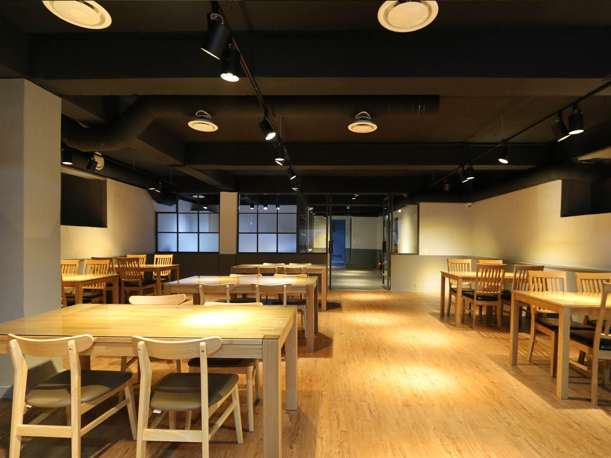

내 가족처럼, 내 집처럼 편안하게
아침부터 챙겨주는
강남역 고시원·원룸텔
지하 카페테리아 조식과
세탁·모닝콜 서비스를 이용하세요.
ROOM TYPES
객실 둘러보기
ABOUT LIME HAUS
라임하우스 소개
공부와 일상을 함께 챙기는
학사형 원룸텔
라임하우스 강남역점은 서울 강남구 역삼로5길 5에 있는 강남역 고시원·원룸텔입니다. 강남역 4번 출구에서 도보 5분 거리의 학사형 원룸텔로, 숙박·세탁·모닝콜 등 필요한 홈케어 서비스를 제공해 생활의 부담을 덜어드립니다. 미니원룸에는 청소 서비스도 안내되어 있습니다.
- 아침 식사
- 지하 카페테리아에서 토스트, 잼, 우유, 시리얼, 버터를 제공합니다. (평일에 한함)
- 세탁과 건조
- 지하에 세탁기와 건조기가 각각 4대씩 마련되어 있습니다. (세제 제공)
- 생활과 학습
- 독서실과 소방설비를 갖췄으며, 공원·역서 치안센터·24시간 마트가 도보 1분 거리에 있습니다.
ROOM FEATURES
객실 설비
각방 벽돌 및 방음 강화 시공
안전한 방화문, 소방시설(스프링쿨러, 화재감지기, 경종 휴대용 조명, 소화기 등)
넉넉한 수납이 가능한 옷장과 수납시설, 넓은 책상과 책장
초고속 인터넷 전용선, 무선 Wi-fi 제공
개인 냉장고(80리터) 및 조절 가능한 덕트형 냉방
개인 화장실/샤워실, 24시간 온수 공급(미니원룸)
미니룸 내창 공용 화장실


미니룸 외창 공용 화장실


미니원룸 내창 개인 화장실

미니원룸 외창 개인 화장실


입실 전 자주 묻는 질문
- 강남역에서 얼마나 걸리나요?
- 강남역 4번 출구에서 도보 5분입니다. 지도 보기
- 미니룸과 미니원룸은 어떻게 다른가요?
- 미니룸은 공용 화장실을 이용하고, 미니원룸은 개인 화장실이 있습니다. 두 유형 모두 내창과 외창 객실이 있습니다. 객실 사진 보기
- 아침 식사와 세탁 시설을 이용할 수 있나요?
- 지하 카페테리아에서 평일에 아침 식사를 제공합니다. 지하 세탁실에는 세탁기와 건조기가 각각 4대 있으며 세제를 제공합니다.
- 공실과 입실 비용은 어떻게 확인하나요?
- 02-564-0143 또는 라임하우스 카카오톡 채널로 문의해 주세요.
VISIT & CONTACT
오는 길과 입실 문의
꿈을 향한 여정, 학사형 원룸텔 라임하우스와 함께하세요.
강남역 4번 출구 도보 5분
강남역 2번 출구 / 역삼역 3번 출구 도보 7분
국민은행 814301-04-121611 (김정희)